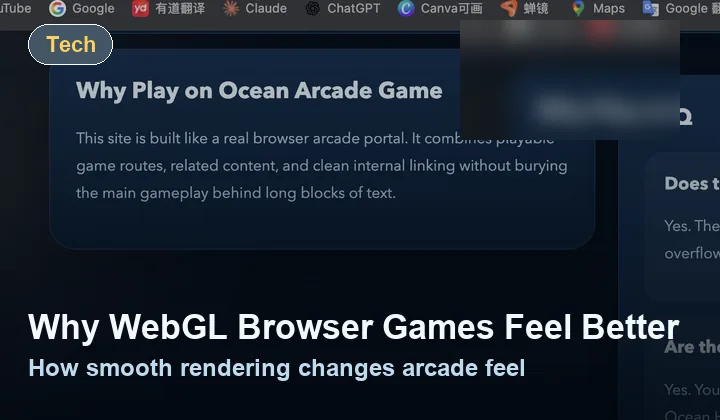

Gameplay Advice
Pressure the screen without rushing your aim
Fast fish clusters can tempt you into firing everywhere. You will usually do better by choosing the most readable lane, aiming ahead of the school, and keeping a steady tempo.
Play Route
Ocean Hunter takes the same browser fishing core and frames it as a quicker, more aggressive route. It is useful when you already understand the controls and want a lane that feels a little tighter and faster.
Play Now
Quick focus: Ocean Hunter works best when you stay aggressive without turning every moment into random spam-clicking.
Use the center and lower-middle lanes to track clusters before they cross out of range.
Gameplay Advice
Fast fish clusters can tempt you into firing everywhere. You will usually do better by choosing the most readable lane, aiming ahead of the school, and keeping a steady tempo.
Portal Role
Ocean Hunter exists to give the portal an authentic game-route feel. It behaves like a real lane inside an arcade catalog instead of a duplicate product card with no reason to click.
Related Games

Main Route
Go back to the cleanest entry route if you want a calmer page structure around the same gameplay.

Break Route
Switch to a different rhythm with the portal’s slot-style side route when you want a rest from fish tracking.

Article
Read why smooth rendering and quick input feedback matter so much in routes like this one.
FAQ
The core gameplay is the same, but the route is framed as a quicker hunt for players who already know the controls.
Yes. The page links directly to Deep Sea Mode, Classic Arcade, and the supporting blog content.
Yes. The layout stays responsive and the game frame scales for smaller screens.
Continue
Use Classic Arcade for a category change, return to the featured game page for a bigger dedicated play screen, or browse the blog for category context and practical tips.